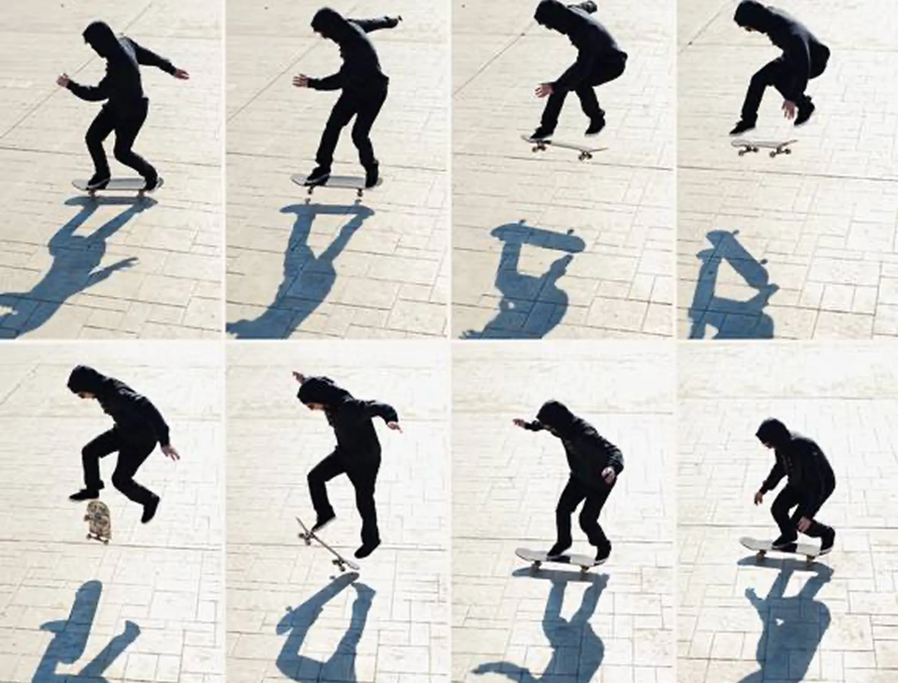
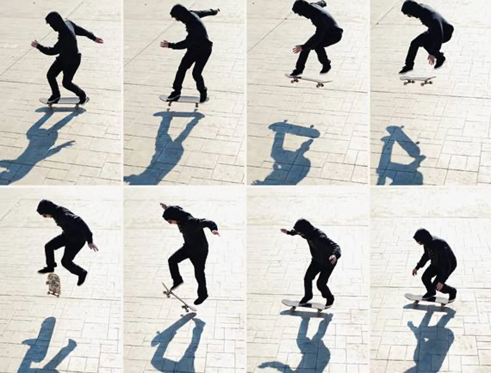
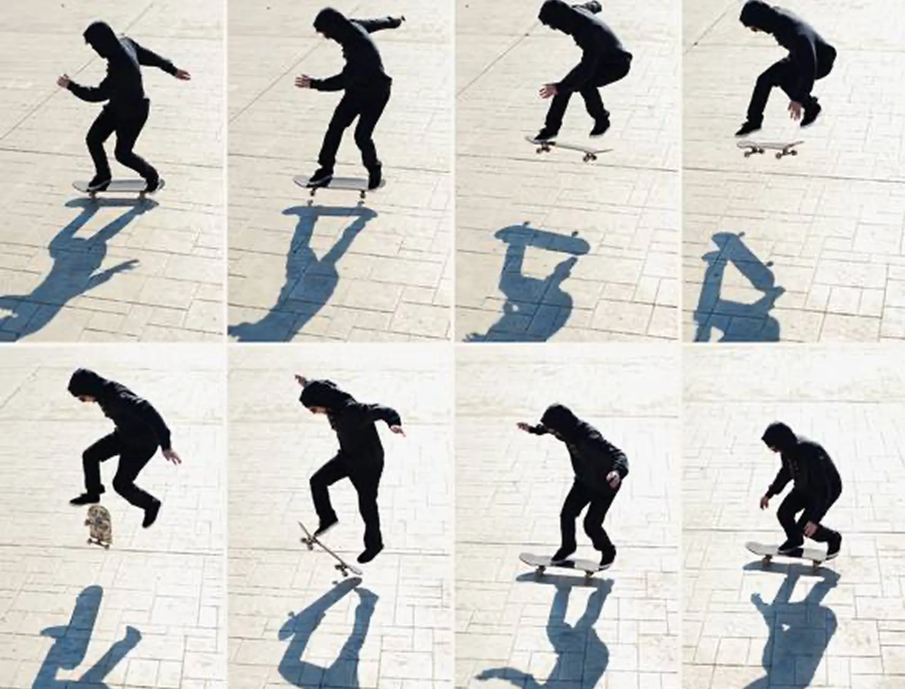

Что такое
поп-шовит?
Поп-шовит — это трюк, при котором доска делает вращение на 180° вокруг своей вертикальной оси. В отличие от олли, здесь основной акцент на задней ноге, которая задаёт вращение доске.
 
Базовый
Поп-шовит (Pop shove it) — это один из базовых флип-трюков в скейтбординге, который выглядит эффектно, но при этом относительно прост
в освоении. В этом трюке доска делает оборот на 180° вокруг вертикальной оси под ногами райдера, в то время как тело остаётся неподвижным.
Изобретённый ещё в ранние годы фристайл-скейтбординга, поп-шовит со временем стал основой для множества более сложных вариаций, таких как 360 shuvit или 360 flip (tre flip).
Поп-шовит — это трюк, при котором доска делает вращение на 180° вокруг своей вертикальной оси. В отличие от олли, здесь основной акцент на задней ноге, которая задаёт вращение доске.
1
Правильная стойка:
Передняя нога: Ближе к центру доски, почти параллельно. Она будет помогать контролировать вращение.
Задняя нога: На тейле, носком чуть ближе к краю.
2
Подготовка:
Слегка согните колени, центр тяжести держите над доской.
3
Щелчок и вращение:
Резко надавите задней ногой на тейл, одновременно отталкивая доску назад и слегка вбок. Это создаст вращение доски на 180°.
4
Контроль передней ногой:
Передняя нога почти не участвует в вращении, но помогает контролировать траекторию доски в воздухе.
5
Полёт:
Подтяните ноги вверх, удерживая их над вращающейся доской.
6
Приземление:
Ловите доску обеими ногами после её полного поворота
на 180°. Приземляйтесь на болты и сгибайте колени
для амортизации.
угол поворота доски вокруг вертикальной оси
среднее время, за которое доска делает полный оборот в воздухе
время, которое требуется новичку для освоения трюка
После освоения поп-шовита можно перейти к: